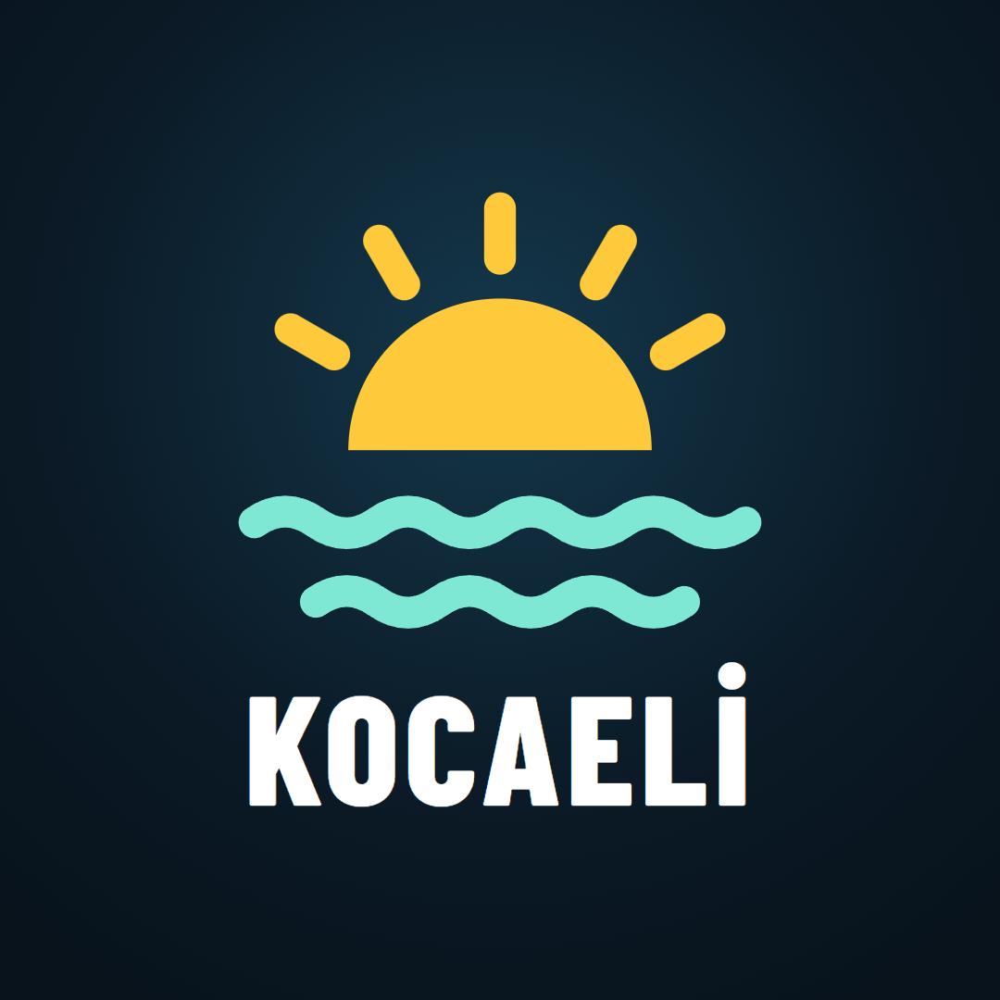

Gizlilik Politikası
Kocaeli Hava Durumu, Instagram ve YouTube'da günlük hava durumu videoları yayınlayan kişisel bir yayındır. Bu sayfa, yayını hazırlayan otomatik yazılımın (“uygulama”) hangi verilere eriştiğini açıklar.
Topladığımız veriler
Ziyaretçilerden, takipçilerden ya da başka kullanıcılardan kişisel veri toplamıyoruz. Bu sitede çerez, analiz ya da reklam aracı yoktur.
Google ve YouTube verileri
Uygulama yalnızca kendi YouTube kanalımıza (@kocaeli_hava_durumu) bağlanır ve şu izinleri kullanır:
- YouTube'a video yükleme (youtube.upload): her gün ürettiğimiz hava durumu videosunu kanalımıza yüklemek için.
- Kanal bilgisini okuma (youtube.readonly): bağlantı kurulurken doğru kanala bağlanıldığını görmek için (kanal adı).
Başka hiçbir kullanıcının Google hesabına erişmiyoruz. Erişim anahtarı yalnızca yayını hazırlayan bilgisayarda ve şifreli olarak GitHub Actions gizli değişkenlerinde saklanır; üçüncü kişilerle paylaşılmaz, satılmaz. Uygulamanın Google API'lerinden aldığı bilgilerin kullanımı Google API Hizmetleri Kullanıcı Verileri Politikası'na, Sınırlı Kullanım şartları dahil, uygundur. Uygulama YouTube API Hizmetlerini kullanır; bkz. YouTube Hizmet Şartları ve Google Gizlilik Politikası.
Erişimi istediğiniz zaman Google hesabı izinleri sayfasından kaldırabilirsiniz (yalnızca kanal sahibi için geçerlidir).
Instagram'da yalnızca kendi hesabımıza (@kocaeli_hava_durumu) içerik paylaşır, kendi gönderilerimizin istatistiklerini ve yorumlarını okuruz. Yorum yazan kullanıcıların bilgilerini saklamayız.
İletişim
Sorularınız için: kocaelihavadurumu@gmail.com